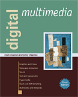
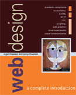

See the book at amazon.co.uk or amazon.com
Related Books

See Digital Multimedia at amazon.co.uk or amazon.com

See Web Design: A Complete Introduction at amazon.co.uk or amazon.com
The authors are not responsible for the content of any external sites linked to from digitalmediatools.org
All material on this site is ©2007–2010 MacAvon Media and may not be reproduced without permission.
Perl: The Programmer's Companion
Perl: The Programmer's Companion is intended to show programmers who are already experienced in some mainstream programming language the power of Perl and to introduce them to its unique features; clearly flagged comparisons with other languages help relate Perl's features to familiar territory. The book is written in a clear and approachable style. The author's account of Perl is informed by his extensive knowledge of programming languages. Unlike some other books on Perl, this one is not directed exclusively at Unix users, but presents Perl as a language that can ease the programmer's burden, no matter what system it is used on.
See the book at amazon.co.uk or amazon.com
Perl: The Programmer's Companion
Nigel Chapman
ISBN 0 471 97563 X. xii+280pp. Published by John Wiley & Sons, Ltd, 1997.